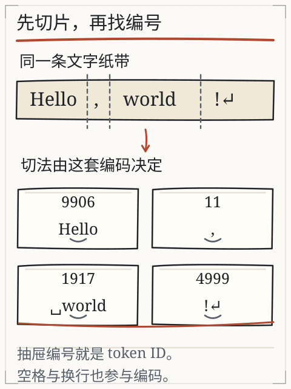
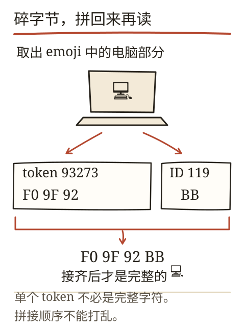
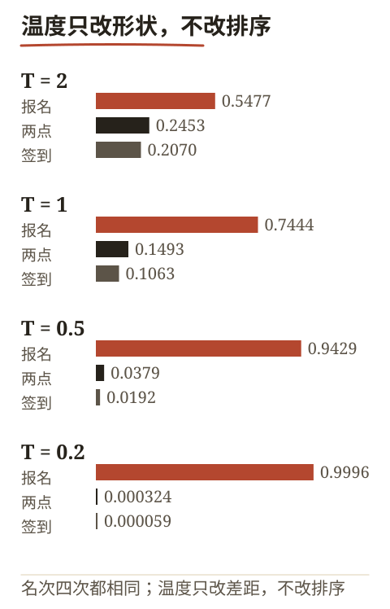
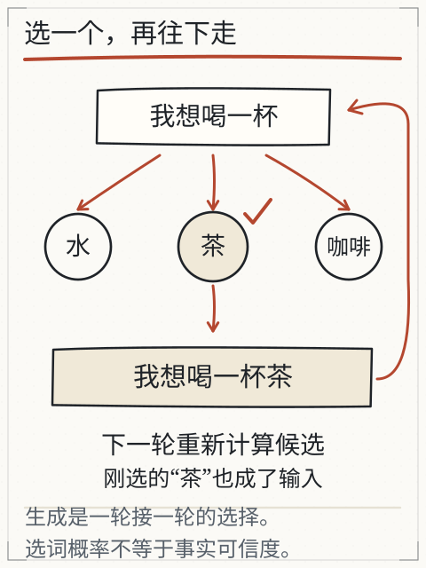
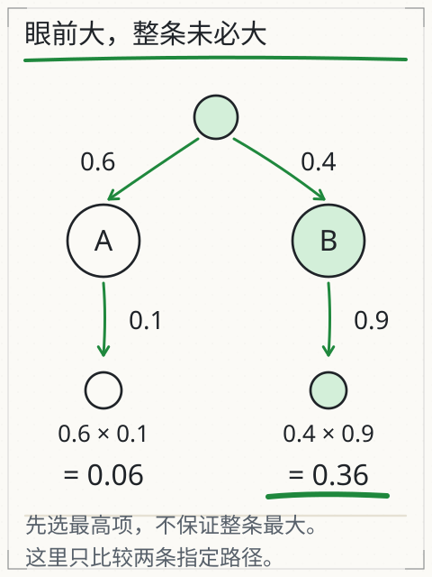

把一句话停在“他端起杯子，喝了一口……”。你接“水”，同事接“茶”，另一个人想到“咖啡”。三个人都把句子接顺了，可谁看见杯子里装的是什么？这一章拆开“接下去”这个动作：模型不是一次写完整段，而是一次算一个片段，选中、追加、再算下一步。
这一卷有一条贯穿的主线：周六 下午 两点 在 图书馆 报名。C05 先管最后一步——给定几个候选分数，怎样选中一个；分数本身从哪来，留给 C06 到 C08 一层层算。C09 再回来改这些分数。
读下去之前先做一个小准备：分数、比例、概率和为一，这三件事要能算。下面会从“一分成几份”开始，不要求先会矩阵。
先修桥：分数、比例与概率
一个袋子里有 3 个红球、1 个蓝球。红球占 3/(3+1)=0.75，蓝球占 1/4=0.25，两者相加为 1。概率就是这种“份额”，只是分母由模型算出来，不由你数球。
模型对下一步的每个候选给出一个分数（logit），分数可正可负，也不相加为 1。要把它们变成份额，常用 softmax：
p_i = exp(s_i) / Σ_j exp(s_j)
exp(x) 是 e 的 x 次方，e≈2.718。先把每个分数变成正数，再各自除以总和。分数大的候选份额大，但份额不会超过 1，全部候选相加等于 1。若分数里有很大的数，直接算 exp 可能溢出，程序通常先减去最大分数再算，比值不变。
从文字到编号：先切片，再查表
模型不直接读汉字。文本先被分词器切成片段（token），每个片段换成词表里的编号（ID），编号再用来查一行数字。片段可以是完整单词、半个单词、标点、空格，甚至一个汉字的部分字节。
以 Hello, world! 为例，旧实验的快照把它切成 Hello、,、 world、! 四片；注意 world 前面的空格跟着它一起走。换成中文或生僻字符，切口可能落在字的中间。UTF-8 里 A 是一个字节 41，中 是三个字节 E4 B8 AD；如果分词器从中间切开，单独显示半截字节就会看到替代字符。把所有片段的字节按原顺序接回去，原文可以无损还原。


主线句子在本课程的人工词表里切成六片：周六、下午、两点、在、图书馆、报名，对应的编号分别是 4102、2871、5530、2701、6984、3650。整句十二个汉字、六片，平均两字一片——这个比例只属于这张人工词表；真实分词器对同一句话可能给七片，也可能给九片。这五个编号是课程 fixture，用来让每一步算术都能复算；换成真实分词器，切法可能不同，编号也完全不同。编号大小说明不了任何语义：2701（在）比 4102（周六）小，与“谁更常用、谁更要紧”没有关系。
这里要记住两个“不相等”：
- 字数 ≠ token 数：一个汉字可能一片，也可能多片；英文单词也可能被拆开。
- ID 接近 ≠ 意思接近：42 和 43 只是相邻的存储位置，语义关系要靠训练后的向量体现，而不是编号大小。
旧实验（X01 分词）可以切换编码、展开每片的字节并还原原文。它只有固定快照，不能替任意新句子现场编码；真实接口还可能额外加入系统提示、聊天格式和工具定义，计量要按实际产品。
完整算例：三个候选，一个分数表
输入是 周六 下午 两点 在 图书馆，要预测下一片。假设模型只考虑三个候选，分数是：
| 候选 | 分数（logit） |
|---|---|
| 报名 | 1.9336 |
| 签到 | −0.0126 |
| 两点 | 0.3268 |
这三个数怎么算出来，是 C06 到 C08 的事：编号查表得向量，注意力在前文里汇总信息，输出头再把向量变成三个分数。眼下只练一件事——把分数变成概率。
T=1 时直接算：
exp(1.9336)=6.91436，exp(−0.0126)=0.98748，exp(0.3268)=1.38652- 总和
9.28836 - 概率约
[0.7444, 0.1063, 0.1493]
温度会先除分数，再算 softmax：
T=2：分数变[0.9668, −0.0063, 0.1634]，概率约[0.5477, 0.2070, 0.2453]。分布变平，冷门候选机会变大。T=0.5：分数变[3.8672, −0.0252, 0.6536]，概率约[0.9429, 0.0192, 0.0379]。分布变尖，高分候选更集中。T→0：程序通常直接取分数最高的候选，不把这个极限硬塞进除法。
上表分数只有个位数，直接算 exp 不会出事。真实 logits 可能有几十上百的量级：exp(1000) 在 float32 里直接溢出成无穷大，归一化就得到 0/0。程序的标准做法是先减最大值再算——exp(1.9336−1.9336)=1、exp(−0.0126−1.9336)=0.1428、exp(0.3268−1.9336)=0.2005，总和 1.3433，概率仍是 [0.7444, 0.1063, 0.1493]。减掉的常数在分子分母里同时出现，比值不变，溢出风险消失。
温度改变的是“怎样从分数里抽”，不是“分数从哪里来”。它不能补上材料里缺失的地点，也不能把错误事实变正确。把 T 从 1 调到 0.5，“报名”的份额从 0.7444 升到 0.9429，但“图书馆里能不能报名”这件事，一点证据都没多出来。
再往下调一档，能看清温度到底在改什么。T=0.2 时分数变成 [9.668, −0.0635, 1.634]，概率是 [0.999617, 0.000059, 0.000324]；到 T=0.1，另外两个候选的概率已经小到打印出来是 0.000000。这时“抽样”名存实亡：只要分数差一点点，结果就锁死在高分候选上。温度不是“保守程度”旋钮，它只放大或压缩分数的差距；分数本身错得离谱时，低温只是把错误锁得更死。

三个候选之外：真实词表有多大
上面的算例只列了三个候选，真实模型的候选是整张词表——几万到十几万片。softmax 要对每一个候选算 exp 再归一化，所以“下一步”这一步本身就是一次覆盖全词表的计算：词表越大，这一步越贵。
这解释了三个常被忽略的现象：
- 概率被切得很碎：词表有几万片时，即使
T=1，单个候选的概率也常常只有百分之几；“最高概率 0.08”并不表示模型瞎猜，只是候选太多。 - 看似无关的候选仍占份额：它们加起来可能不小，采样的随机性就来自这里；把温度调到 0.2，等于把这几万片的空间压缩成一条窄缝。
- 步数与费用成正比：一段几百字的回答要跑几百次“算分数、选一个、追加”，每次都是一次完整前向计算。屏幕上的打字速度、接口的计费口径，都绕不开这个循环。
把这三条与前面的算例对齐：分数表只有三个候选，是为了手算；真实系统里同一套流程在几万片候选上跑几百遍。流程不变，规模变了。
选中之后：追加与停止
抽样选中一个片段后，把它接到输入末尾，形成新输入，再算下一轮。这个循环叫自回归生成。下一步的候选依赖刚才写下的内容：第一步选中“报名”，下一步要接的可能是标点或“方式”；选中“签到”，候选又会变。

选中“报名”之后，输入变成六片 周六 下午 两点 在 图书馆 报名，模型重新算出下一片的分数表。这里出现两个容易混淆的“都一样”：
- 流程一样，分数不一样：每一步都做“查表—汇总—出分数”，但输入多了一片，分数表随之改变。
- 温度一样，结果也可能不一样：同一温度下按概率抽样，两次运行可以抽到不同候选；只有把种子和实现都固定，才谈得上复现。
生成会在几种情况下停：
- 选中停止标记（它通常不写进正文）；
- 达到步数或长度上限；
- 服务端规则要求停止。
看到文字不再增加时，要检查停止原因。若最后一句断在半路，不能把它当完整回答。旧实验（X02 生成）会直接显示停止原因，还能固定种子重放同一次抽样；真实服务的并行计算、版本和解码实现不同，零温度也不保证逐字复现。
每步最大，整段一定最好吗
不一定。假定第一步 A 的概率 0.6、B 的概率 0.4；走 A 后目标片段概率 0.1，走 B 后是 0.9。两条完整路径的概率是：
- A 路：
0.6 × 0.1 = 0.06 - B 路：
0.4 × 0.9 = 0.36
第一步 A 更大，整条路却更小。贪心解码每步取最大，采样按概率抽，top-k 先留若干高分候选，top-p 先留累计概率达到阈值的一组再归一化。用上面的分数表在 T=1 时做 top-p=0.9：先取“报名”0.7444，累计 0.7444；再取“两点”0.1493，累计 0.8937；还不够 0.9，于是把“签到”也纳入，三个候选全留。阈值卡在中间时，一个候选的去留会改变归一化后的分布，这一点比“top-p 更聪明”更值得记住。

分数错了，错在哪一层
报名 拿到 1.9336，两点 只有 0.3268。这个差距可以来自三个不同的地方，修法完全不同：
- 前文没给出关键信息：把“图书馆”从输入里删掉再算一次——如果“报名”的分数大幅塌下去，说明这份证据确实由它带进来；如果几乎不动，模型从别处或从先验里拿到了同样的倾向。这时要改的是材料，不是温度；温度调低只会更稳定地选同一个词。
- 看见了但没汇总到：前文有“图书馆”，注意力却没把它的信息带到当前位置，分数就仍然低。这时要改的是 C07 的注意力权重与 C08 的拼接方式。
- 汇总了但输出头偏：向量里已经有“地点+动作”的信息，输出头给“报名”的分数仍然偏低。这时要改的是输出头这一层，训练（C09）就是改它的手段之一。
判断落在哪一层，靠的是同一套动作：改一个条件、看分数怎么动。删一个词、换一处注意力权重、只改输出头，动的是三个不同的量。只改温度不在此列——它不动分数，只动抽样。
这条分层的用处是：以后遇到“模型答得不对”，先问“它是没看见、没汇总，还是输出头偏”，而不是笼统地说“模型不行”。三者的证据不同，修法也不同。
失败对照
- 概率高就当真：最高概率只表示“这段前文后更容易接出它”，不表示事实为真。材料没写杯里是什么，抽到“水”也没有增加证据。
- 调低温度就不编：温度让分布变尖，错误照样可能被更稳定地选中；把“报名”的份额推到 0.9429，也只是更稳定地选它。
- 把显示速度当计算速度：屏幕上的打字动画受网络和前端影响，不能反推模型内部步数。
- 忽略截断：达到长度上限时最后一句可能不完整，报告不能照抄。
- 拿另一套词表的 ID 喂模型：编号只在对应词表里有意义，换编码器要重新编码。
独立作业（数值容差 ±0.001）
- 分数
[0, 1, 1]，分别算T=1与T=0.5时三个候选的概率（先写 exp 值，再写归一化结果）。 - 用上面的两路口例子，算“先 A 再目标”和“先 B 再目标”的整条概率，并说明第一步贪心会选哪条。
- 字符串
A中的 UTF-8 字节是什么？如果分词器把它切成41、E4、B8 AD三片，直接逐片显示会看到什么？怎样验证还原正确？ - 某次生成在“因此，我们建议”处停止，原因是达到最大长度。这份输出能否直接作为结论？写出你要检查的两件事。
- 同一提示两次回答不同，列出至少三个可能原因，并说明哪一个能靠固定种子在本地实验中排除。
核对值与判分要点在 C05 答案。
项目增量：生成记录 v1
S2 的项目从“资料报告”转向“机制记录”。新建 generation-log.md，每次观察记一行：
输入原文 | 分词/字节快照 | 温度与采样设置 | 实际输出（截断处标出） | 停止原因 | 是否核验事实
至少做两类记录：一类用本地教学实验（可重放），一类用你能访问的聊天产品（记下版本、模式、可见设置；看不到的就写“未知”）。不要编造模型输出；没有实际运行就留空，并注明原因。
来源与边界
本章沿用旧课 L01 文字怎样变成模型的输入 与 L02 为什么同一句话能接出不同结果 的字节、分词、生成循环与停止说明，复用图 G25/G26/G27/G28 的原始出处。主线句子的五个编号、三个候选分数（1.9336、−0.0127、0.3268）以及 [0,1,1] 练习、两路口概率都是课程人工数值，不是从 DeepSeek、Kimi 或任何模型内部读出的 logits；它们只用于练 softmax、温度、top-p 与路径概率。真实产品的 token 计数、可选温度和停止字段以其文档与界面为准。